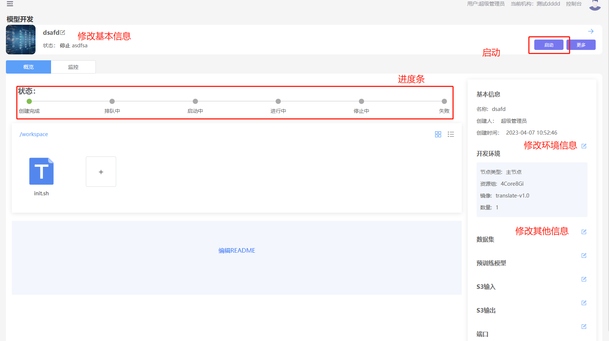

模型开发
模型开发是指构建模型开发的环境，通过在线的VSCode和JupyterLab帮助工程师快速的进行模型试验。
创建任务
1、进入“模型开发”界面
2、点击“新增”按钮
3、填写表单信息
| 参数 | 描述 |
| 名称 | 模型开发任务的名称，长度在5-40之间，必填 |
| 描述 | 对任务的描述，必填 |
| 配图 | 任务的配图，非必填 |
| 环境 | 环境是平台预制的开发环境，分为公开（平台发布的）、共享（每个租户内部共享）、私有（每个用户独享） |
| 资源组 | 平台将内存、CPU、GPU打包一组资源组让用户使用，资源组由管理员在控制台维护 |
| 主节点/子节点 | 平台支持分布式的开发，一个任务可以开启一个主节点和多组子节点 |
| 数据集 | 数据集以文件形式挂载到容器里，目录为:/dataset/{数据集别名} |
| S3输入 | 支持将S3以文件系统方式挂载到容器里，目录为:/input/{名称} |
| 预训练模型 | 支持将模型以文件系统方式挂载到容器里，目录为: /model/{名称} |
| S3输出 | 用于将数据写入S3，支持将S3以文件系统方式挂载到容器里，目录为:/input/{名称} |
| 端口映射 | 用于将容器里的端口映射，可以通过映射端口访问容器内端口 |
4、 点击“确定”按钮
5、创建成功以后，可以在详情页上传自己的文件

启动
1、进入“模型开发”界面
2、选中项目，点击进入详情页
3、点击“启动”按钮（如果任务是运行状态，启动按钮不显示）
4、等待一段时间，可以查看工作区中的进度条，查看容器状态
5、等待状态改为“运行中”，点击“进入”按钮，进入VSCode或者JupyterLab。
停止
1、进入“模型开发”界面
2、选中项目，点击进入详情页
3、点击“停止”按钮（如果任务不是“运行中”，停止按钮不显示）
4、等待一段时间，可以查看工作区中的进度条，查看容器状态
导出模型
导出模型用于将训练好的模型导入到模型管理模块。 1、 点击“更多”按钮 2、 点击“导出模型”模块 3、 在弹出框中选中需要导出的模型文件 4、 点击“确定”按钮 5、 在弹出的“模型管理”界面上，填写表单信息。 6、 点击“确定”按钮
提交模型训练任务
模型开发完成的算法可以提交成模型训练任务，模型训练可以按照优先级排队执行。 1、 点击“更多”按钮 2、 点击“训练任务”模块 3、 在弹出的“模型训练”界面上，填写表单信息。 4、 点击“确定”按钮
修改模型开发
1、进入“模型开发”界面
2、选中修改的记录进入"详情页”
修改基本信息
1、点击名称旁边的修改按钮，弹出对话框，修改基本信息
2、填写修改的表单信息
3、点击“确定”按钮，保存修改记录
修改开发环境
1、点击开发环境旁边的修改按钮，弹出对话框，修改环境信息
2、填写修改的表单信息
3、点击“确定”按钮，保存修改记录
追加文件
1、在工作区中点击“+”按钮进行追加文件
删除文件
1、 选中文件，右键弹出菜单，点击“删除”按钮，删除文件
删除
1、进入“模型开发”界面
2、选中模型开发任务，移动到删除按钮旁，会弹出删除按钮。
3、弹出确认删除的对话框，点击“确认”按钮，删除模型开发任务